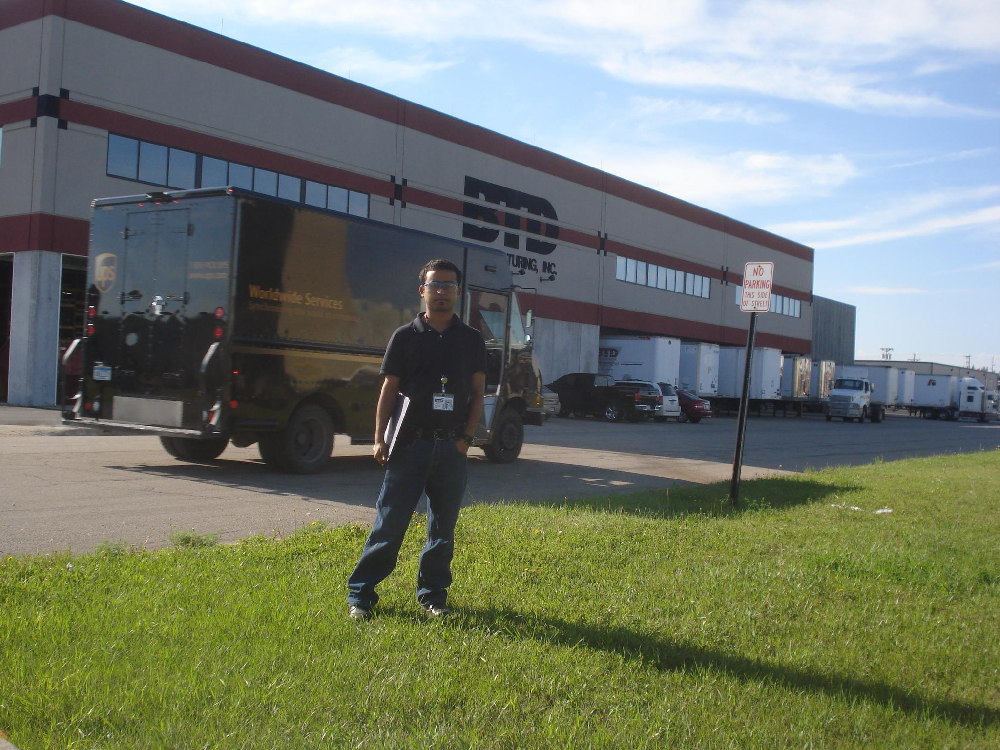

Just another Dude.
USA তে বিদেশী স্টুডেন্ট এবং ইমিগ্রেশনের সবকিছু কন্ট্রোল করে United States Citizenship and Immigration Services (USCIS), তাদের একটা নিয়ম আছে, সামারে ইন্টার্ন করার পারিমিশন (CPT) পেতে হলে, "মিনিমাম দুই সেমিস্টার কমপ্লিট করা থাকতে হবে"। সামারে (মে থেকে আগস্ট পর্যন্ত) সাধারনত ক্লাস থাকে না এবং অনেকের ফান্ডও থাকে না বলে, এই সময়ে ইন্টার্ন (উনিভার্সিটির বাইরে কোন কম্পানিতে তিন মাসের জব) করে, টু পাইস কামিয়ে, কিছু প্রফেশনাল এক্সপেরিয়েন্স নিয়ে, ফুল টাইম জব পাইতে সুবিধা হবে, এমনটা সবাই ভাবে। জানুয়ারী ৩, ২০১০ এ নর্থ ডেকোটা স্টেট ইউনিভার্সিটি (NDSU) তে ইন্ডাস্ট্রিয়াল এন্ড ম্যানুফ্যাকচারিং ইঞ্জিনিয়ারিং (IME) এ মাস্টার্স করতে এসেছি বলে, সামার (মে মাস) নাগাদ আমার একটা মাত্র সেমিস্টার কমপ্লিট হবে, তাই আমি চাইলেও সামারে ইন্টার্ন করতে পারবো না। সেই জন্য ফেব্রুয়ারীর মাঝামাঝিতে স্প্রিং ক্যারিয়ার ফেয়ারে কোন ইন্টারভিউ না পাইলেও খুব বেশি মন খারাপ হয়নি।
এপ্রিলের শুরুতে, IME এর এক ফ্যাকাল্টির ইমেইল অনুসারে, রেজুমি জমা দিয়ে, অন-ক্যাম্পাস ইন্টার্নের ইন্টারভিউর সুবাধে, মে মাসের প্রথম সপ্তাহে, একটা ইমেইল পেলাম, "তোমারে ইন্টার্নের জন্য সিলেক্ট করে, দু-দুইবার ফোন দিয়ে, কোনো উত্তর না পেয়ে, শেষবারের মতো জানতে চাচ্ছি, তুমি ইন্টারেস্টেড আছ নাকি"। দেখিনা কি হয় ভেবে, ইয়েস বলে দিয়ে, ঘন্টা দুয়েক গুগলিং করে, USCIS এর ওয়েবসাইটে, পড়লাম, "F-1 students may not work off-campus during the first academic year.” ভার্সিটির বড় ভাই, জব করে এমন কয়েকজন, কিছু ভারতীয়, অন্য ডিপার্টমেন্টের পোলাপান, ইন্টারন্যাশনাল অফিসের লোকজন, এমনকি USCIS এ ফোন করলেও, সব চেষ্টার একই আউটপুট, "অফ-ক্যাম্পাস ইন্টার্ন করতে পারবা না, অন-ক্যাম্পাস কিছু পাও কিনা দ্যাখো"। শেষমেষ, আমার এডভাইজার শুনে বল্লো, ইলিগাল কিছু করলে, ব্যাক টু দ্যা প্যাভিলিয়ন। লাস্ট ইয়ারেও এরাম একটা ঘটনা ঘটছে, জাস্ট কাজ থেকে ধরে এনে বাসায় দুই মিনিট টাইম দিয়ে, ডাইরেক্ট এয়ারপোর্ট....
যুক্তি দিয়ে কাউকে বুঝাতে পারি নাই, কেনো একটা সরকারী রুলের এগিনিস্টে, কেনো আমি ভাবতেছি। কয়দিন পর ওই কম্পানি থেকে ইমেইল আসছে, মে মাসের ১৭ তে ইন্টার্ন শুরু হবে, তার আগে ১৩ তারিখে একজন ভিপি, সবাইরে ফ্যাক্টরি এবং প্রজেক্ট বুঝায় দিবে। ভাবনার এঙ্গেল ঘুরিয়ে, ঠিক করলাম, যাই ফ্যাক্টরিটা দেখতে। সমস্যা হচ্ছে আমি যেখানে ছিলাম (University Village, Fargo, North Dakota) সেখান থেকে ইন্টার্নের জায়গা, BTD Manufacturing, Detroit Lakes, Minnesota, যাইতে এক ঘন্টা লাগে। আমার গাড়ি নাই, ড্রাইভিং লাইসেন্স নাই, এমনকি ড্রাইভিংও পারি না। এই মরার দেশে আপনার গাড়ি না থাকলে এক শহর থেকে অন্য শহরে যাবার কোনো উপায় নাই। ভেবেচিন্তে, BTD থেকে যারে যারে ইমেইল করছে, সবাইরে আলাদা আলাদা রাইড চেয়ে মেইল দিলে, অপারগতা প্রকাশ করে মাত্র দুইজন রিপ্লাই দিছে। শেষমেষ ইমেইল আড্ড্রেস থেকে নাম নিয়ে, ফেইসবুকে ম্যাসেজ দিয়ে, একজন শ্রীলঙ্কান মেয়ের রিপ্লাই পেয়ে, বুঝেছি গাড়ি না থাকলেও কেউ কেউ রাইড বা মেইলের রিপ্লাই পায়। ওই মেয়েকে অনুনয়-বিনয় করে, ১৩ তারিখে, সেই রাইড ম্যানেজ করে, যাই ফ্যাক্টরি দেখতে।
এর মাঝে, ডিপার্টমেন্টের VA Hospital রিসার্চ প্রজেক্টের জন্য এক চিনকু রে, সামারে রিসার্চের জন্য হায়ার করা হইছে। সে পুরা সামার, হসপিটালের ওয়ার্ক ফ্লো এনালাইসিস করে, সিক্স সিগমা দিয়ে, প্রসেস ইমপ্রুভ করবে। ও অবজার্ভ করতে যাবে VA হসপিটালে, তারমানে কাজ করবে হসপিটালে কিন্তু রিপোর্ট করবে প্রজেক্ট টিমরে আর তাকে বেতন দিবে ডিপার্টমেন্টের রিসার্চ ফান্ড। আমি কেনো চেষ্টা করলাম না ভেবে, আফসোস লাগলেও, পরে মনে হইছে এই টাইপের কিছু একটা BTD ম্যানুফ্যাকচারিং-এর সাথে করতে পারলে, আমি ওদের ফ্যাক্টরিতে গিয়ে কাজ করবো কিন্তু ডিপার্টমেন্টের প্রজেক্টের আন্ডারে, ডিপার্টমেন্ট আমাকে পে করবে, ব্যস ল্যাটা চুকে গেলো। কিন্তু চাল্লেঞ্জ হচ্ছে তিনটা - ১. কম্পানিকে রাজি করাতে হবে ২. কোনো এক ফ্যাকাল্টিকে রাজি করাতে হবে ৩. এক সপ্তাহের কম সময়ে এইটা সিস্টেম করতে হবে।
ফ্যাক্টরি এবং প্রোডাকশন প্রসেস দেখে, তিন বছর বাংলাদেশে কনসাল্টেন্সির অভিজ্ঞতাকে কাজে লাগিয়ে, চামে তিনটা ফিডব্যাক দিলাম। প্রডাকশনের ভিপি বললো, তুমি ইন্টার্নের সময়, এইগুলা ভালো করে অবজার্ভ করে, সামার শেষে প্রসেস ইমপ্রুভমেন্টের উপর রিপোর্ট দিবা। বুঝছি, এইটা ই সুযোগ। মিটিং শেষে তাকে বললাম, দ্যাখো, আমার USA-তে দুই সেমিস্টার হয় নাই, তাই ইন্টার্ন করতে পারবো না। ব্যাটা মাথামুন্ডু কিচ্ছু বুঝতে না পেরে, বল্লো তুমি হিউম্যান রিসোর্স - ভিকি লাহলুম এর কাছে যাও। এই কম্পানি ইন্টারন্যাশনাল হায়ার করে না বলে, ওই মহিলাও ইন্টারন্যাশনাল স্টুডেন্টদের প্রবলেম সম্পর্কে কিছু জানে না। অনেক কষ্ট করে বুজায়ছি যে, আমাকে ডাইরেক্ট পে না করে, NDSU এর IME ডিপার্টমেন্টকে একটা প্রজেক্ট দিবে। ডিপার্টমেন্ট আমাকে পে করে দিবে। ওই মহিলা জানতে চাইসে, কোন ফ্যাকাল্টি? এডভাইজার আগেই ভয় লাগাইছে দেখে, কিছু না ভেবেই, হুট করে যে ফ্যাকাল্টি ইন্টারভিউ এর জন্য রেজুমি চাইছিলো, তার নাম বলে দিছি। অথচ ওই ফ্যাকাল্টি কিছু জানে না। এখন কি হবে?
বাসায় এসে, ভার্সিটির ওয়েবসাইট থেকে, ওই ফ্যাকাল্টির ফোন নাম্বার বের করে, ফোনে বুঝাতে ব্যর্থ হয়ে, সারারাত ভেবে ভেবে, পরের দিন সকালে তার অফিসে গিয়ে, তাকে রাজি করিয়ে, ইন্টার্ন শুরু করে দিলেও, ইন্টার্নের তিন-চার দিন পার হয়ে গেলেও, জানিনা ইন্টার্ন আসলে করতে পারবো কিনা। যেই ছেলে ফার্স্ট দিন নিয়ে গেছিলো, তার সাথে সপ্তাহে ২০ ডলার তেলের খরচ হিসেবে দিবো বলে, যাতায়ত করতে শুরু করলাম। শেষমেষ, শুক্রবার বিকেলে আমার রিপোর্টিং ম্যানেজার, ন্যাথান এসে বললো, "গুড এন্ড ব্যাড নিউজ। গুড নিউজ হচ্ছে, IME ডিপার্টমেন্টের সাথে প্রজেক্ট ভার্বালি এপ্রোভ হইছে। ব্যাড নিজউ হচ্ছে, অফিসিয়ালি এপ্রুভ হইতে সামার শেষ হয়ে যেতে পারে, তার আগে তুমি টাকা পাবা না।"
ইন্ডিভিজুয়াল স্টাডি নামে একটা কোর্স রেজিস্ট্রেশন করে, সেটার আন্ডারে, প্রজেক্টে দেখিয়ে, কয়েকটা রিপোর্ট জমা দিয়ে, জুলাইয়ের লাস্টে ফার্স্ট পেমেন্ট পেয়ে, অফিসিয়ালি ইন্টার্ন না করতে পারলেও, মিশন একমপ্লিশ করেছি। এখন পিছন ফিরে তাকালে, সহজেই ডটগুলো কানেক্টেড হয়ে যায়। সব স্টেপগুলোই লজিক্যাল মনে হয়। ট্রাস্ট মি, যখন স্টেপ গুলা নিয়ে সামনে আগাতে থাকেন, তখন কোন ডট তো দেখাই যায় না বরং সামনে এসে পরে বাধার দেয়াল।
